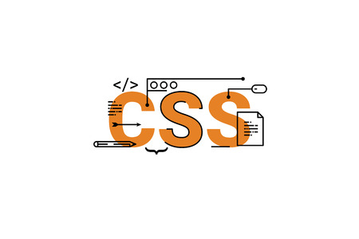
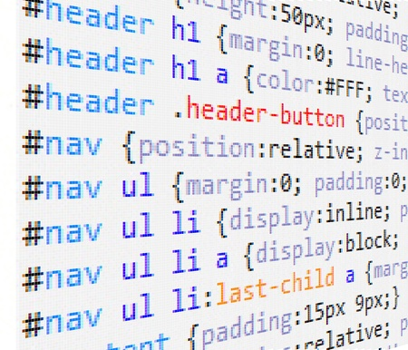

Les CSS (Cascading Style Sheets en anglais, ou « feuilles de style en cascade »)
sont le code utilisé pour mettre en forme une page web. C'est un langage de feuille de style,
c'est-à-dire qu'il permet d'appliquer des styles sur différents éléments sélectionnés dans un document HTML.

Un concept parmi d'autres, présent dès l'origine du web
Le concept de feuille de style est présent dès l'origine du World Wide Web :
le premier navigateur web WorldWideWeb permet de mettre en forme les documents à l'aide
de ce qui serait aujourd'hui considéré comme une « feuille de style utilisateur »2. De même,
les navigateurs Viola en 1992 et Harmony en 1993 recourent à un mécanisme similaire permettant
de déterminer le rendu des polices de caractères, des couleurs ou de l'alignement du texte.

Vers une maturation difficile
Contrairement aux logiciels, les spécifications CSS ne sont pas développées par versions successives,
qui permettraient à un navigateur de se référer à une version en particulier. CSS est développé par « niveaux »,
ce qui contraint chaque nouveau niveau à intégrer le précédent, et chaque implémentation à être compatible
avec la précédente : CSS1 est donc développé pour être un sous-ensemble de CSS2, qui est lui-même développé pour
être un sous-ensemble de CSS3. Ceci explique en partie la lenteur de l'avancement normatif de CSS13.
CSS 3
CSS3 devient « modulaire », afin de faciliter ses mises à jour,
mais aussi son implémentation par des agents utilisateurs aux capacités
et aux besoins de plus en plus variés (navigateurs graphiques, navigateurs pour mobiles,
navigateurs vocaux).
En 2007, les modules les plus avancés concernent :
la mise en forme des annotations ruby
la négociation de style entre serveurs et agents utilisateurs (« Media Queries »)
le rendu web TV
la gestion des couleurs
la prise en compte de la configuration de l'interface utilisateur.